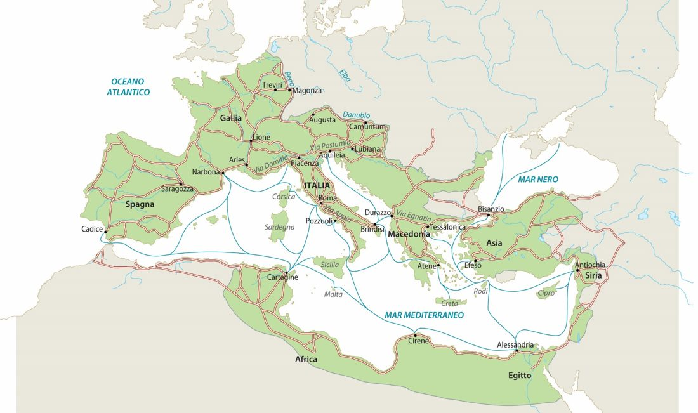
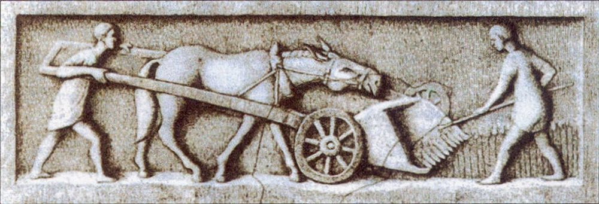
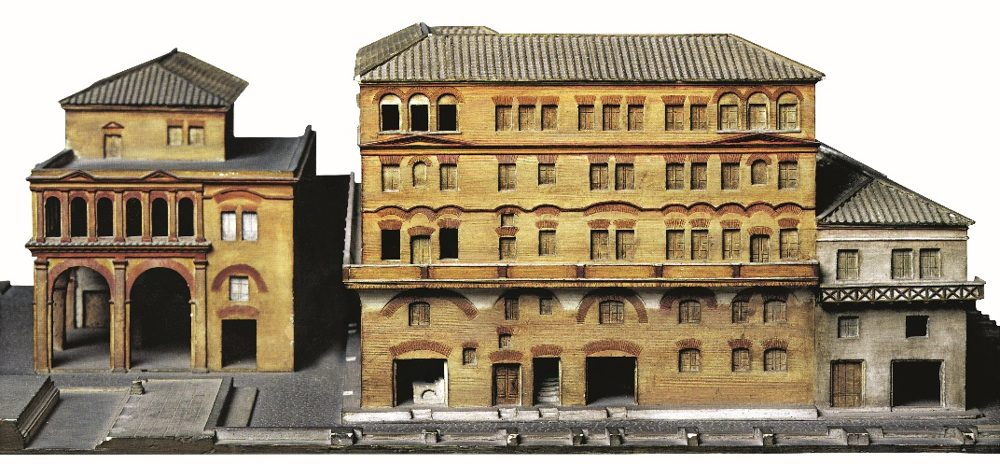

Dopo Cesare arriva Augusto, il primo imperatore. Per circa 200 anni, fino alla fine del II secolo d.C., dentro l'Impero non ci sono guerre.
Questo lungo periodo di pace si chiama pax romana, cioè "pace romana".
🎨 Per l'interrogazione la prof ha scritto sul registro: libro da pagina 9 a 13, oppure le slide fino alla 9. Le slide fino alla 9 sono i riquadri da 1 a 6. I riquadri 7 e 8 sono le slide dopo: guardali se ti avanza tempo.
🕊️ 1. La pace fa crescere tre cose
Quando c'è pace si può lavorare, viaggiare e costruire. La pax romana fa crescere:
COMMERCI · CITTÀ · AGRICOLTURA
🎨 Il trucco: pensa a tre parole, vendere (commerci), abitare (città), coltivare (agricoltura).
🚢 2. I commerci

L'Impero nel 14 d.C., con le strade principali e le rotte delle navi (slide della prof)
I commerci crescono perché ci sono quattro cose:
un unico Stato e un'unica moneta
niente pirati e niente briganti
un mercato grandissimo, tutto l'Impero
strade che funzionano bene
💡 Un mercante può andare dalla Siria alla Britannia su strade e mari sicuri, con una sola moneta, senza mai uscire dallo stesso Stato.
🌾 3. L'agricoltura
Anche l'agricoltura cresce, per quattro motivi:
non ci sono guerre né saccheggi che distruggono i campi
arrivano attrezzi nuovi, come la falce
ci sono tantissimi schiavi che lavorano la terra
le città crescono e chiedono tanto cibo

Una mietitrice gallo-romana, scolpita nella pietra: una macchina per tagliare il grano
🏙️ 4. Le città
Roma arriva a un milione di abitanti; Alessandria e Antiochia a 250.000
nascono nuove colonie, cioè città nuove
con i soldi dei commerci le città diventano più grandi
I Romani fondano città che esistono ancora oggi: Torino, Aosta, Strasburgo, Vienna, Belgrado.
🎨 Due sono in Italia, Torino e Aosta: le "nostre"!
🏛️ 5. Le case: domus e insulae
A Roma i ricchi e i poveri vivono in case molto diverse.
È una casa bella e grande, costruita intorno a due ambienti:
l'atrio: si entra dal vestibolo, e qui il padrone riceve i suoi clienti
il peristilio: un giardino con statue, affreschi e mosaici, dove si affacciano le camere
L'insula: il palazzo dei poveri

Modello di un'insula (Roma, Museo della Civiltà Romana)
La plebe vive nelle insulae, grandi palazzi a più piani:
appartamenti piccoli, sporchi e bui
costruiti male: possono crollare
tanto legno: scoppiano spesso incendi
🎨 Domus = casa di un ricco, con il giardino. Insula = palazzo per tanti poveri, come un'isola di case.
👥 6. La società: senatori e cavalieri
In cima alla società ci sono due gruppi di ricchi:
Senatori
Cavalieri
Patrimonio
1 milione di sesterzi
400.000 sesterzi
Si eredita?
sì, passa ai figli
no
Che lavoro fanno
funzionari, ufficiali dell'esercito, Senato
uffici dell'Impero (burocrazia) ed esercito
Da dove vengono i soldi
dalla terra
dai commerci (ma comprano anche terre)
📖 Sesterzio = una moneta romana.
🧺 7. Il ceto medio e la plebe
Il ceto medio: mercanti, artigiani e professionisti. Alcuni sono ricchi, altri no. Chi è bravo può fare fortuna.
La plebe di città: persone senza niente, che vivono di lavoretti. Lo Stato regala loro il grano. Non si occupano di politica: chiedono solo panem et circenses.
📖 Panem et circenses = "pane e giochi del circo": basta mangiare e divertirsi.
L'evergetismo: i ricchi regalano soldi alla città per edifici, giochi e carità. Così la plebe resta contenta e i ricchi diventano popolari.
🗺️ 8. Le province
gli imperatori fermano i funzionari che rubavano nelle province
le città conquistate si governano da sole, con magistrati eletti chiamati decurioni
piano piano gli abitanti delle province ricevono la cittadinanza romana: prima intere regioni o le famiglie più fedeli
🗺️ Mappa da tenere in mente
PAX ROMANA
200 anni di pace (fino al II sec. d.C.)
|
__________________________________
| | |
COMMERCI CITTA' AGRICOLTURA
1 Stato Roma 1 milione niente guerre
1 moneta colonie nuove falce
no pirati Torino, Aosta schiavi
strade Vienna... tanta richiesta
CASE: DOMUS (ricchi) atrio + peristilio
INSULA (poveri) bui, crolli, incendi
SOCIETA': senatori (1 milione, ereditario, terra)
cavalieri (400.000, commerci)
ceto medio · plebe: panem et circenses
✅ Prova a rispondere (a voce!)
1. Che cos'è la pax romana?
2. Quali sono le tre cose che crescono grazie alla pace?
3. Perché i commerci vanno così bene?
4. Che differenza c'è tra una domus e un'insula?
5. Che differenza c'è tra senatori e cavalieri?
1. il lungo periodo di pace dentro l'Impero, fino alla fine del II secolo d.C. · 2. commerci, città, agricoltura · 3. un solo Stato e una sola moneta, niente pirati, un mercato enorme, strade efficienti · 4. la domus è la casa dei ricchi, con atrio e peristilio; l'insula è il palazzo dei poveri, buio e pericoloso · 5. i senatori hanno un milione di sesterzi, il titolo passa ai figli e guadagnano dalla terra; i cavalieri hanno 400.000 sesterzi e guadagnano dai commerci